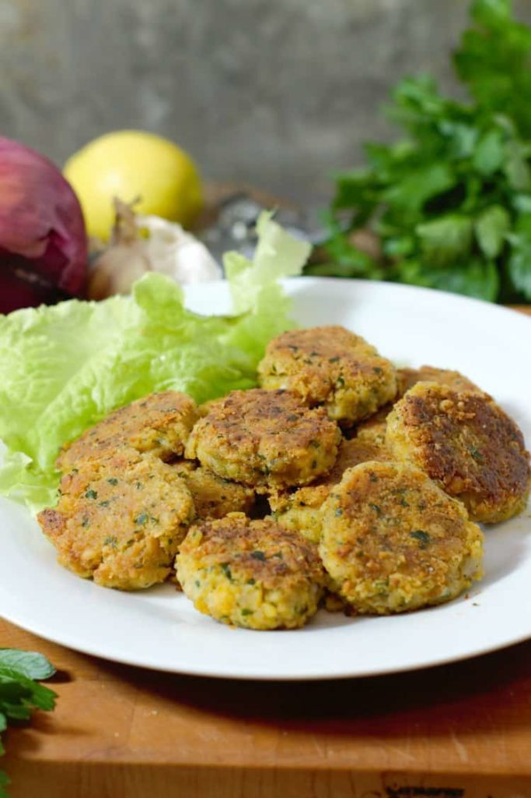

Falaffel Recipe
home

Original Recipe by Chef Markus Mueller
Blog
A great falafel recipe that you can pull together quickly and easily.
Time
Prep time 15mins - Cook time 15mins - Total time 30mins
Ingredients
- 1 large can of Chickpeas, rinsed and drained
- 3 whole cloves garlic minced
- ¼ medium red onion minced
- 2 teaspoon cumin
- 2 tablespoon chopped fresh parsley
- 3 tablespoon AP flour
- 1 teaspoon Salt
- Pepper to taste
- ¼ cup Ap Flour
Instructions
- Crush the wash and dried chickpeas using a pestle in a bowl until they make a rough paste.
- Add the minced garlic, chopped red onion, parsley, cumin, salt, pepper, and 3 tablespoon flour to the mixture, and mix together with a spoon. Avoid over-mixing to prevent the mixture from becoming to paste-like.
- Form the falafel mixture into little balls and then flatten them to make little patties. Refrigerate the patties for 30 minutes to help them firm up.
- To cook the falafel patties, heat a frying pan with some oil over medium heat. Dip the individual falafel patties in the ¼ cup of flour to coat them, and then place them in the hot oil. Fry for 3-4 minutes on either side ot until dark golden brown.
- Serve the falafel patties right away, or keep them warm in a pre-heated oven. The falafel patties once cooked can also be cooled down, and then eaten at a later date, either cold in a falafel wrap, or reheated in the oven for a quick supper.